Learning Goals
At the end of this Tutorial, you will be able to:
- Create a free account with the MongoDB Atlas service.
- Obtain a connection string that you can use with your Express apps.
About MongoDB Altas
MongoDB Atlas is an online hosted service that provides an integrated suite of data services centered around a cloud NoSQL database. A free-forever user tier is available.
Signing up to MongoDB Altas
Follow the steps below.
- Go to the MongoDB website at https://www.mongodb.com/ and click the green Try free button ay the top right.

- Enter an email address and password or use a Gmail account. 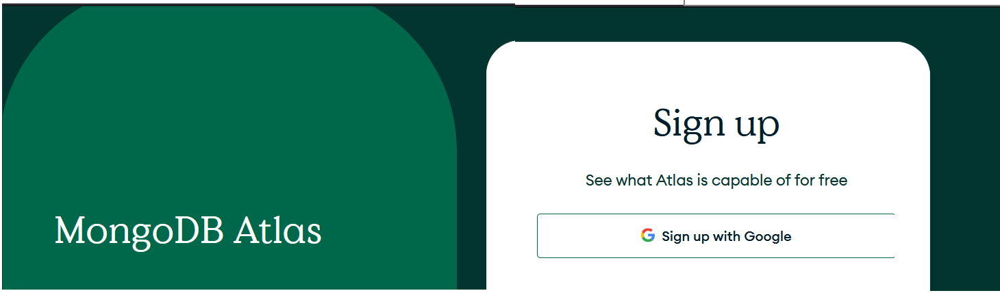
- Accept the Terms of Service and Privacy Policy, and click the Create your Atlas account button.
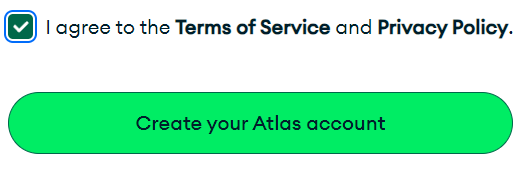
If you have not used a Gmail account to sign up, you will be asked to confirm your email address.
Next, a Welcome screen will appear briefly.

- Respond to the user questionnaire. 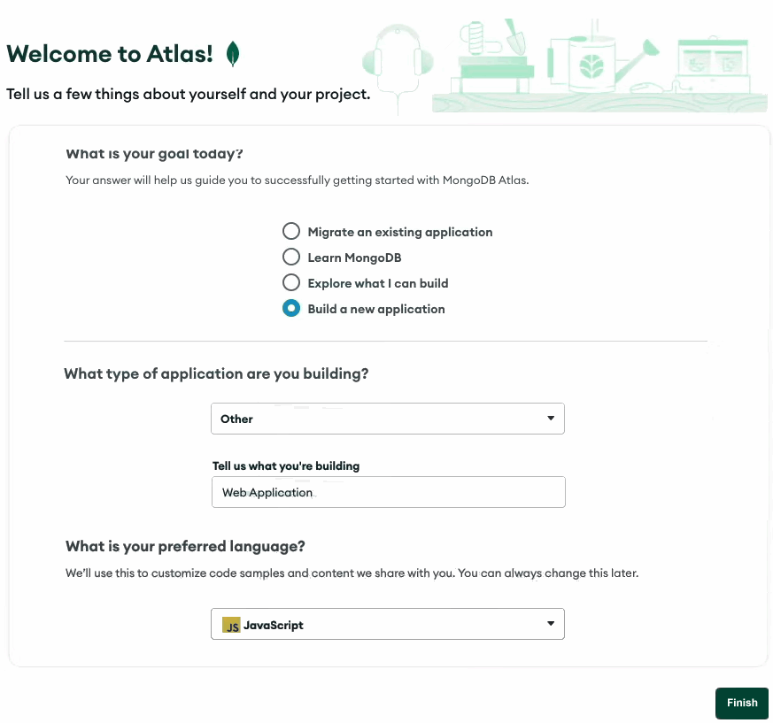 When complete, click the Finish button.
- On the Deploy a cloud database screen, in the FREE Shared box, click the Create button. 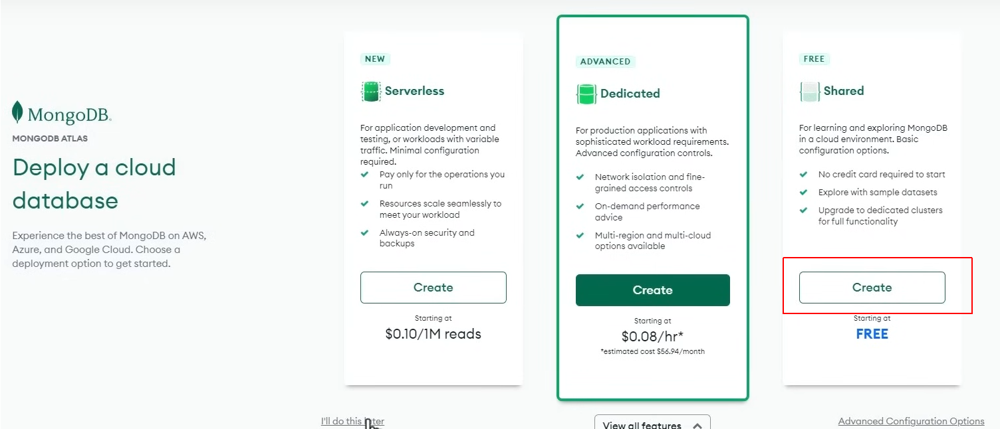
- On the Database Deployments screen, click the Build a database button. 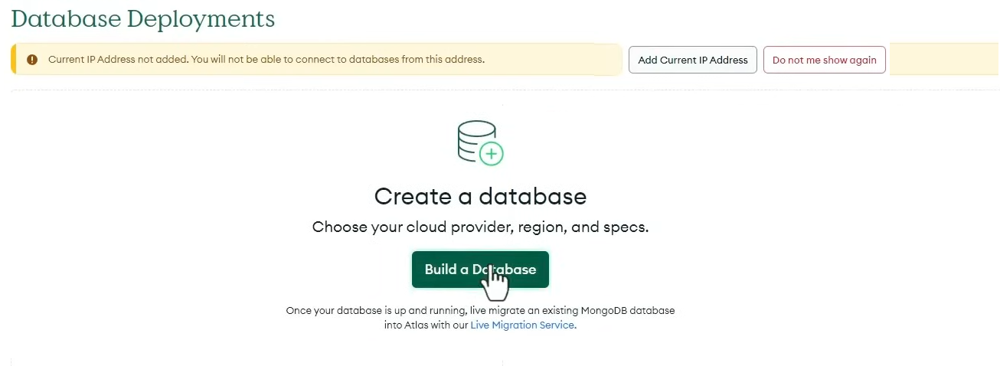 This will create a number of sample databases for you to experiment with.
- On the Create a Shared Cluster screen, accept or amend the default values for Cloud Provider & Region. 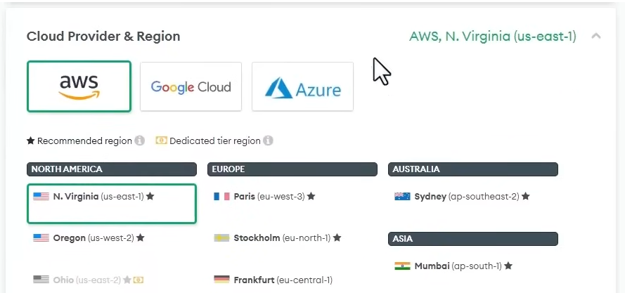
- Next, accept or amend the default Cluster Name of Cluster0. 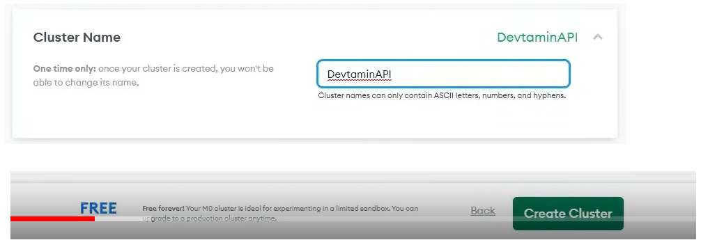
- When finished, click the Create Cluster button.
- On the Security Quickstart screen, choose Username and Password. 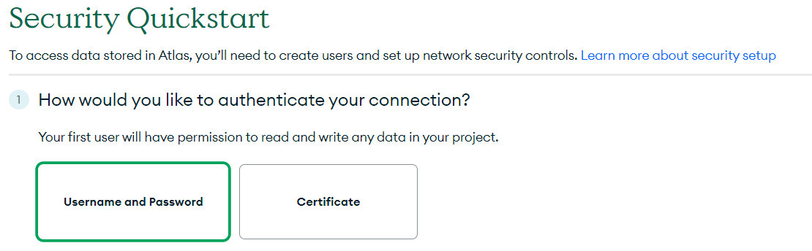
- Enter a Username and Password and click the Next button.
- Create a database user Username and Password and click the Create User button. 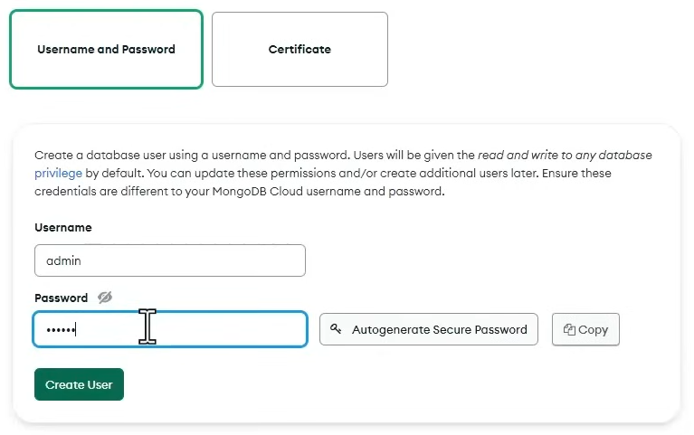
- Accept the default connection location of My Local Environment.

- Enter the permitted IP address(es) for accessing your database and click the Add Entry button. For this experimental database, you can enter 0.0.0.0. 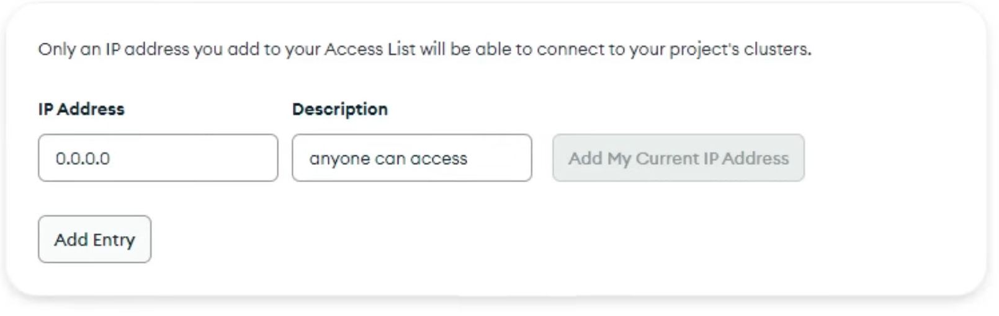
- Finally, at the bottom of the screen, click the Finish and Close button.
- You should now see a message similar to the following. Click the Go to Databases button. 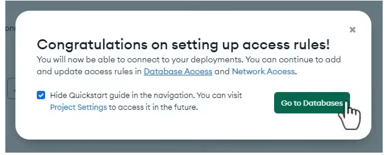
- You should now see a Database Deployments screen, telling you that your Cluster is being created. This may take a few minutes to complete.

- When is Cluster is built, click the Connect button. 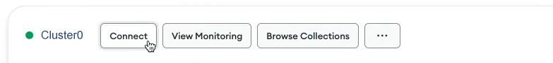
- In the pop-up dialog box now displayed, choose Drivers. 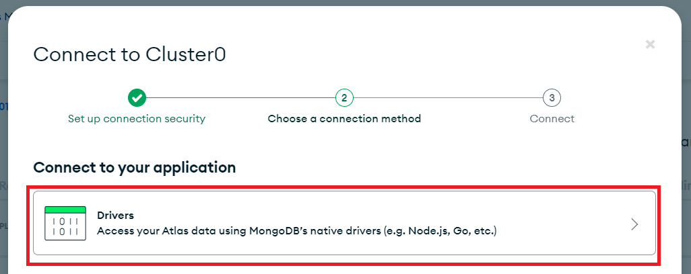
- In the next pop-up dialog box now displayed, choose Node.js and 5.5 or later. 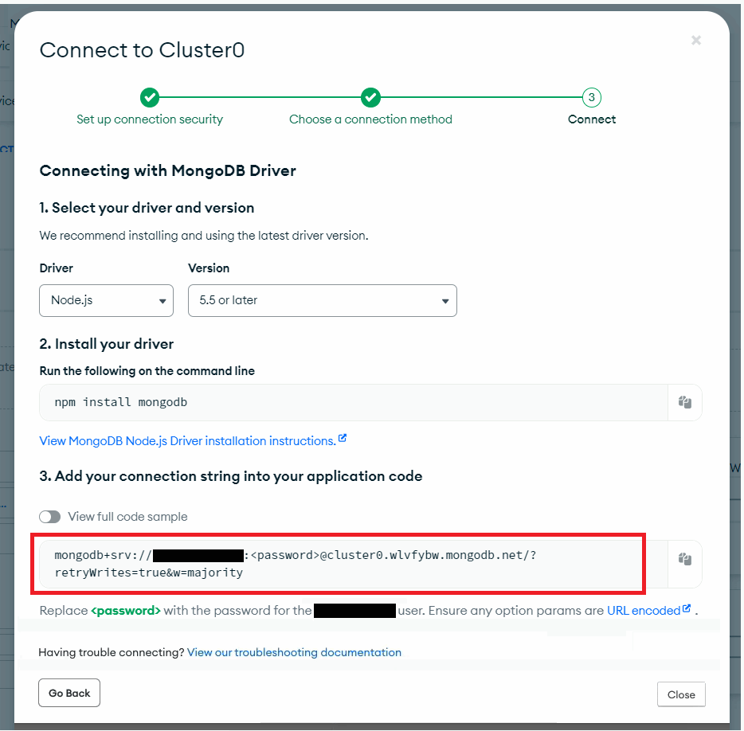 Copy the MongoDB connection string to a text file on your machine and save the file.
- Close the Close button.
Reviewing your MongoDB account
You have now signed up as a user of the free tier of MongoDB Atlas. Note the following:
- You have not actually created a new database. However, the database user with the Username and Password you created has access to a number of free sample databases you can experiment with.
- You have obtained a connection string that you can use to connect to MongoDB from an Express app. The connection string does not include the name of a particular database.
- MongoDB Atlas suggests you connect your Express apps using its native client driver, which you can install by running this command in your app folder:
npm install mongodbHowever, a better option for connecting your Express apps is to use the Mongoose module instead.